library(trendseries)
library(dplyr)
library(ggplot2)
library(tidyr)
# Load data
data("electric", "vehicles", "ibcbr", package = "trendseries")Introduction
This vignette covers advanced trend extraction methods that go beyond simple moving averages and standard economic filters. These methods are designed for specific situations:
- STL decomposition: Seasonal data with complex patterns
- Kalman filter: Optimal smoothing with state-space models
- Savitzky-Golay filter: Preserving peaks and local features
- Spline smoothing: Highly flexible nonparametric trends
- LOESS: Locally adaptive smoothing
STL Decomposition: Handling Seasonality
STL (Seasonal-Trend decomposition using LOESS) is ideal for data with regular seasonal patterns. It decomposes a time series into three components: seasonal, trend, and remainder.
Basic STL Example
Let’s use electricity consumption data, which has clear seasonal patterns:
# Get recent electricity data
electric_recent <- electric |>
slice_tail(n = 72) # Last 6 years
# Apply STL decomposition
electric_stl <- electric_recent |>
augment_trends(
value_col = "electric",
methods = "stl"
)
# STL returns the trend component
head(electric_stl)
#> # A tibble: 6 × 3
#> date electric trend_stl
#> <date> <dbl> <dbl>
#> 1 2019-08-01 10987 11709.
#> 2 2019-09-01 11379 11759.
#> 3 2019-10-01 11973 11810.
#> 4 2019-11-01 12424 11865.
#> 5 2019-12-01 12201 11921.
#> 6 2020-01-01 12909 11981.Visualize the decomposition:
# Calculate seasonal and remainder components
electric_decomp <- electric_stl |>
mutate(
seasonal = electric - trend_stl, # Approximate seasonal (for visualization)
trend = trend_stl
)
# Plot original and trend
p1 <- electric_decomp |>
select(date, electric, trend) |>
pivot_longer(cols = c(electric, trend), names_to = "series") |>
mutate(series = ifelse(series == "electric", "Original", "Trend")) |>
ggplot(aes(x = date, y = value, color = series)) +
geom_line(linewidth = 0.8) +
labs(
title = "Electricity Consumption: STL Trend",
subtitle = "Trend component removes seasonal patterns",
x = NULL,
y = "GWh",
color = NULL
) +
theme_minimal() +
theme(legend.position = "bottom")
print(p1)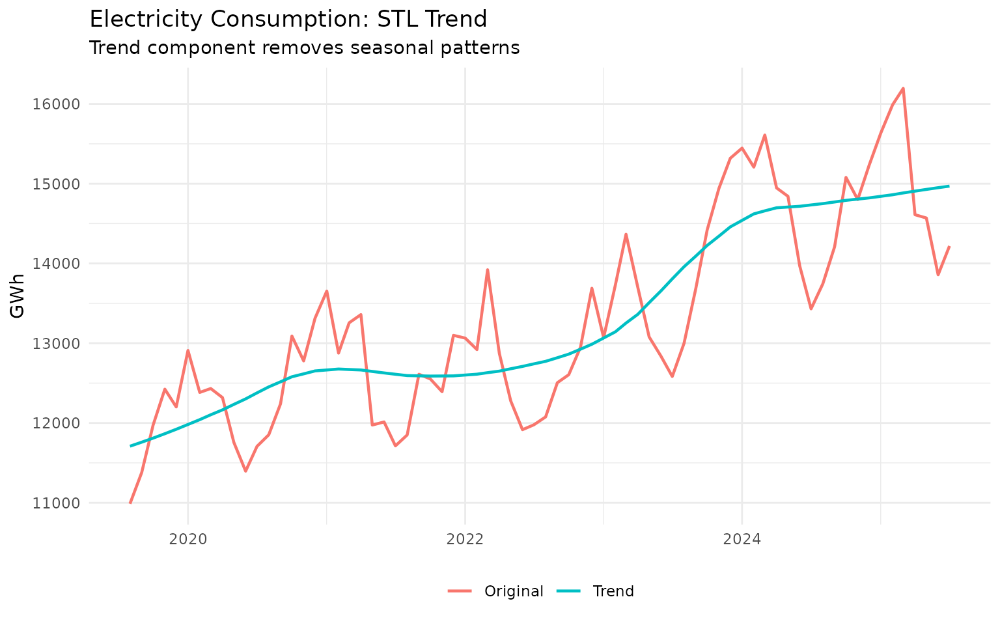
Notice how the STL trend is much smoother than the original data because it has removed the seasonal fluctuations.
Comparing STL with HP Filter on Seasonal Data
Let’s compare STL with the HP filter on the same seasonal data:
# Apply both methods
electric_comparison <- electric_recent |>
augment_trends(
value_col = "electric",
methods = c("stl", "hp", "ma"),
window = 12 # 12-month window for MA
)
# Plot comparison
electric_comparison |>
select(date, electric, trend_stl, trend_hp, trend_ma) |>
pivot_longer(
cols = c(electric, starts_with("trend_")),
names_to = "method",
values_to = "value"
) |>
mutate(
method = case_when(
method == "electric" ~ "Original",
method == "trend_stl" ~ "STL",
method == "trend_hp" ~ "HP Filter",
method == "trend_ma" ~ "12-month MA"
)
) |>
ggplot(aes(x = date, y = value, color = method)) +
geom_line(linewidth = 0.8) +
labs(
title = "Comparing Methods on Seasonal Data",
subtitle = "STL explicitly handles seasonality",
x = "Date",
y = "GWh",
color = "Method"
) +
theme_minimal() +
theme(legend.position = "bottom")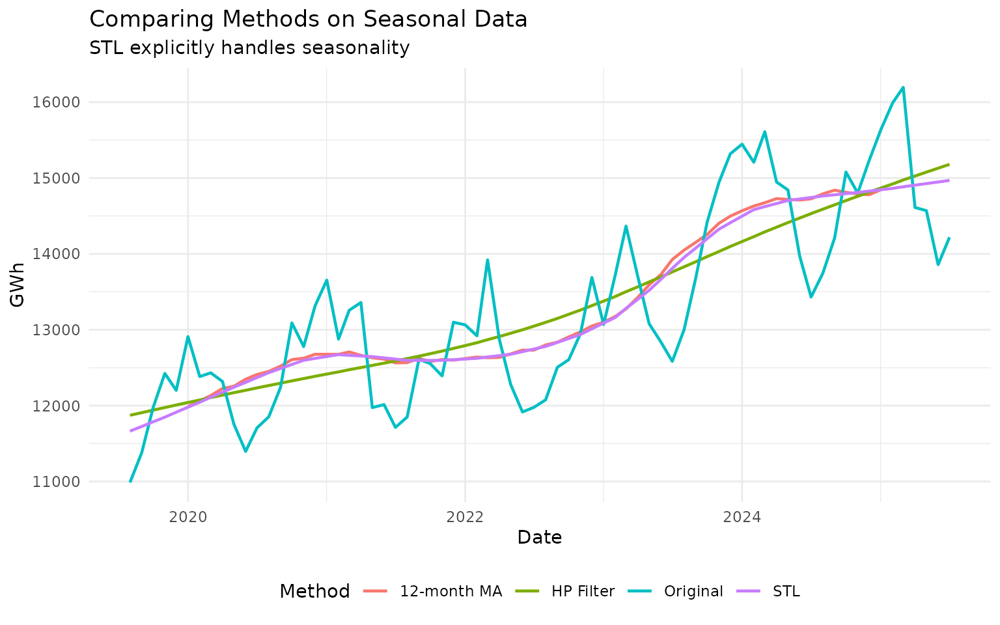
All three methods remove seasonality to some degree, but STL is specifically designed for this purpose.
When to Use STL
Use STL when: - Data has clear monthly or quarterly seasonal patterns - Seasonality strength varies over time - You want to separately analyze seasonal and trend components
Don’t use STL when: - Data has no seasonality (use HP or MA instead) - Seasonal pattern is irregular (try other methods) - You have very short time series (need at least 2 full cycles)
Kalman Filter: Optimal Statistical Smoothing
The Kalman filter provides statistically optimal smoothing under certain assumptions. It’s based on state-space models and is widely used in engineering and finance.
Basic Kalman Smoothing
# Apply Kalman filter to IBC-Br data
ibcbr_recent <- ibcbr |>
slice_tail(n = 120)
ibcbr_kalman <- ibcbr_recent |>
augment_trends(
value_col = "ibcbr",
methods = "kalman"
)
# Compare with HP filter
ibcbr_comparison <- ibcbr_recent |>
augment_trends(
value_col = "ibcbr",
methods = c("kalman", "hp", "loess")
)
# Plot
ibcbr_comparison |>
select(date, ibcbr, starts_with("trend_")) |>
pivot_longer(
cols = c(ibcbr, starts_with("trend_")),
names_to = "method",
values_to = "value"
) |>
mutate(
method = case_when(
method == "ibcbr" ~ "Original",
method == "trend_kalman" ~ "Kalman",
method == "trend_hp" ~ "HP Filter",
method == "trend_loess" ~ "LOESS"
)
) |>
ggplot(aes(x = date, y = value, color = method)) +
geom_line(linewidth = 0.8) +
labs(
title = "Kalman Filter vs Other Methods",
subtitle = "IBC-Br Economic Activity Index",
x = "Date",
y = "Index",
color = "Method"
) +
theme_minimal() +
theme(legend.position = "bottom")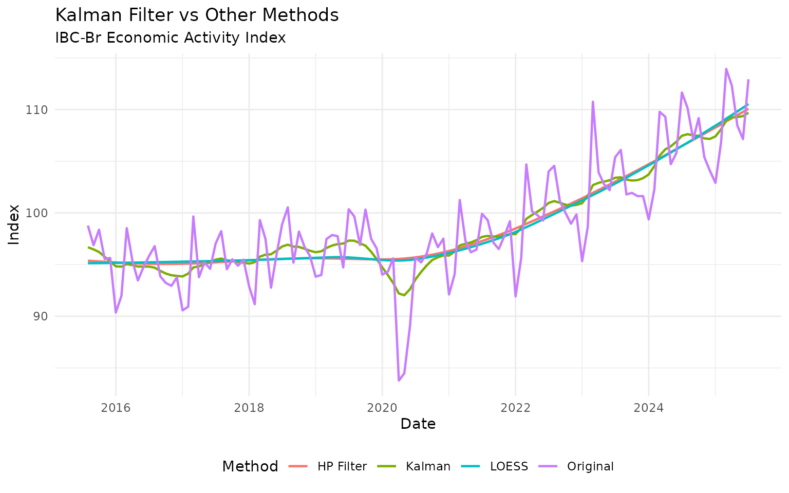
Adjusting Kalman Smoothing
You can control the smoothness with the smoothing
parameter (higher values = more smoothing):
# Try different smoothing levels
smoothing_levels <- c(0.5, 1.0, 2.0, 5.0)
vehicles_recent <- vehicles |>
slice_tail(n = 60)
vehicles_kalman <- vehicles_recent
for (s in smoothing_levels) {
temp <- vehicles_recent |>
augment_trends(value_col = "vehicles", methods = "kalman", smoothing = s) |>
select(trend_kalman)
names(temp) <- paste0("kalman_", s)
vehicles_kalman <- bind_cols(vehicles_kalman, temp)
}
# Plot
vehicles_kalman |>
select(date, vehicles, starts_with("kalman_")) |>
pivot_longer(
cols = c(vehicles, starts_with("kalman_")),
names_to = "method",
values_to = "value"
) |>
mutate(
method = case_when(
method == "vehicles" ~ "Original",
method == "kalman_0.5" ~ "Light smoothing",
method == "kalman_1" ~ "Medium smoothing",
method == "kalman_2" ~ "Heavy smoothing",
method == "kalman_5" ~ "Very heavy smoothing"
)
) |>
ggplot(aes(x = date, y = value, color = method)) +
geom_line(linewidth = 0.8) +
labs(
title = "Kalman Filter with Different Smoothing Levels",
subtitle = "Higher values produce smoother trends",
x = "Date",
y = "Production (thousands)",
color = NULL
) +
theme_minimal() +
theme(legend.position = "bottom")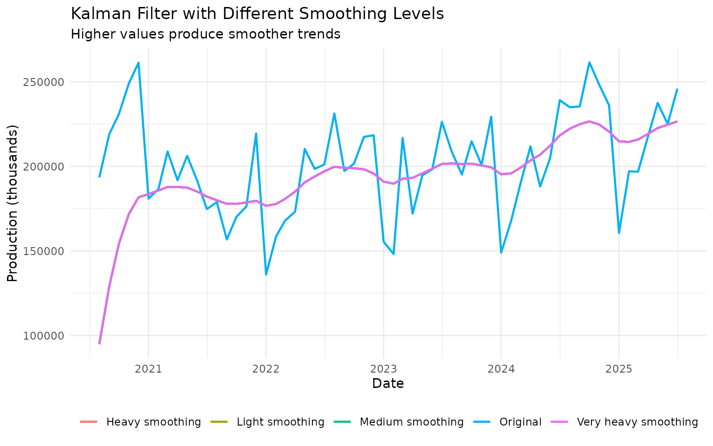
When to use Kalman: - You want statistically principled smoothing - Data is noisy but has a clear underlying trend - You need real-time filtering (Kalman works well with streaming data)
Savitzky-Golay Filter: Preserving Features
The Savitzky-Golay (SG) filter is designed to preserve local features like peaks and valleys while smoothing. It fits local polynomials to the data.
Basic SG Example
# Apply SG filter to vehicle production
vehicles_sg <- vehicles_recent |>
augment_trends(
value_col = "vehicles",
methods = "sg",
window = 9 # Must be odd number
)
# Compare SG with MA
vehicles_comparison <- vehicles_recent |>
augment_trends(
value_col = "vehicles",
methods = c("sg", "ma", "loess"),
window = 9
)
# Plot
vehicles_comparison |>
select(date, vehicles, starts_with("trend_")) |>
pivot_longer(
cols = c(vehicles, starts_with("trend_")),
names_to = "method",
values_to = "value"
) |>
mutate(
method = case_when(
method == "vehicles" ~ "Original",
method == "trend_sg" ~ "Savitzky-Golay",
method == "trend_ma" ~ "Moving Average",
method == "trend_loess" ~ "LOESS"
)
) |>
ggplot(aes(x = date, y = value, color = method)) +
geom_line(linewidth = 0.8) +
labs(
title = "Savitzky-Golay vs Other Smoothers",
subtitle = "SG preserves peaks better than simple MA",
x = "Date",
y = "Production (thousands)",
color = "Method"
) +
theme_minimal() +
theme(legend.position = "bottom")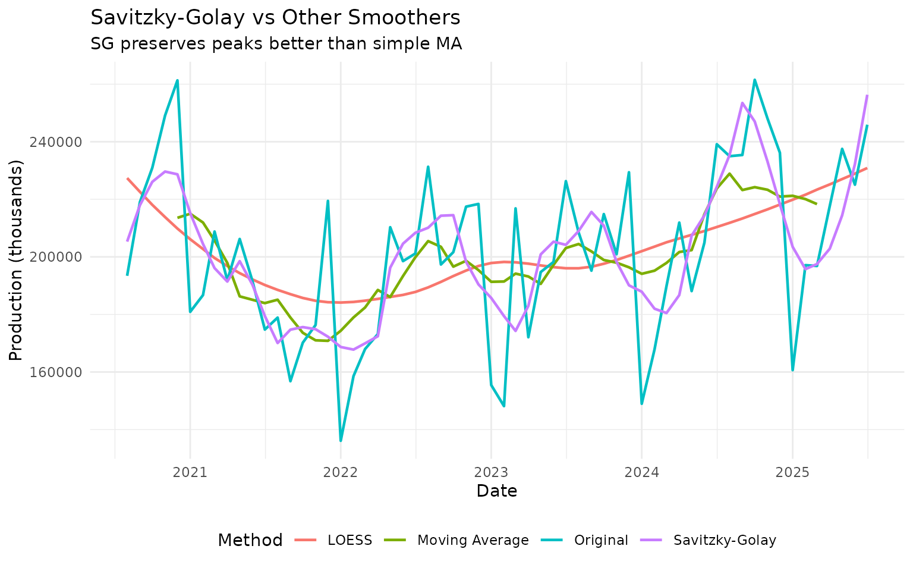
Notice how SG preserves peaks and valleys better than the simple moving average.
Polynomial Order
You can adjust the polynomial order (higher order = more flexible):
# Try different polynomial orders
vehicles_sg_poly <- vehicles_recent |>
augment_trends(
value_col = "vehicles",
methods = "sg",
window = 9,
params = list(sg_poly_order = 2)
) |>
rename(sg_order2 = trend_sg)
vehicles_sg_poly <- vehicles_sg_poly |>
augment_trends(
value_col = "vehicles",
methods = "sg",
window = 9,
params = list(sg_poly_order = 3)
) |>
rename(sg_order3 = trend_sg)
vehicles_sg_poly <- vehicles_sg_poly |>
augment_trends(
value_col = "vehicles",
methods = "sg",
window = 9,
params = list(sg_poly_order = 4)
)
# Plot
vehicles_sg_poly |>
select(date, vehicles, sg_order2, sg_order3, trend_sg) |>
pivot_longer(
cols = c(vehicles, sg_order2, sg_order3, trend_sg),
names_to = "method",
values_to = "value"
) |>
mutate(
method = case_when(
method == "vehicles" ~ "Original",
method == "sg_order2" ~ "Order 2 (quadratic)",
method == "sg_order3" ~ "Order 3 (cubic)",
method == "trend_sg" ~ "Order 4"
)
) |>
ggplot(aes(x = date, y = value, color = method)) +
geom_line(linewidth = 0.8) +
labs(
title = "Savitzky-Golay with Different Polynomial Orders",
subtitle = "Higher orders preserve more detail",
x = "Date",
y = "Production (thousands)",
color = NULL
) +
theme_minimal() +
theme(legend.position = "bottom")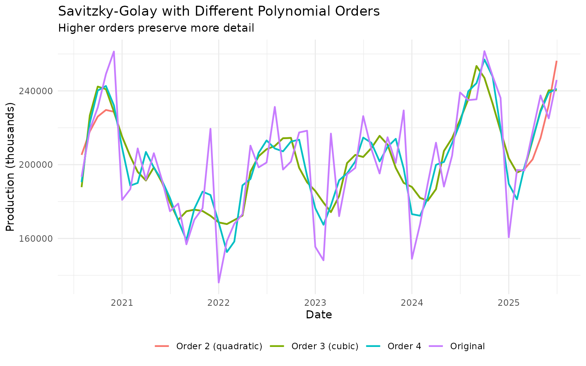
When to use Savitzky-Golay: - Peaks and valleys in the data are meaningful - You want smoothing without losing local structure - Data is relatively smooth (not too noisy)
LOESS: Locally Adaptive Smoothing
LOESS (LOcally Estimated Scatterplot Smoothing) fits local weighted regressions. It’s very flexible and adapts to local data patterns.
Basic LOESS
# Apply LOESS to IBC-Br
ibcbr_loess <- ibcbr_recent |>
augment_trends(
value_col = "ibcbr",
methods = "loess",
smoothing = 0.2 # Span parameter (0-1)
)
# Plot
ibcbr_loess |>
select(date, ibcbr, trend_loess) |>
pivot_longer(cols = c(ibcbr, trend_loess), names_to = "series") |>
mutate(series = ifelse(series == "ibcbr", "Original", "LOESS Trend")) |>
ggplot(aes(x = date, y = value, color = series)) +
geom_line(linewidth = 0.8) +
labs(
title = "LOESS Smoothing",
subtitle = "Locally adaptive polynomial regression",
x = "Date",
y = "Index",
color = NULL
) +
theme_minimal() +
theme(legend.position = "bottom")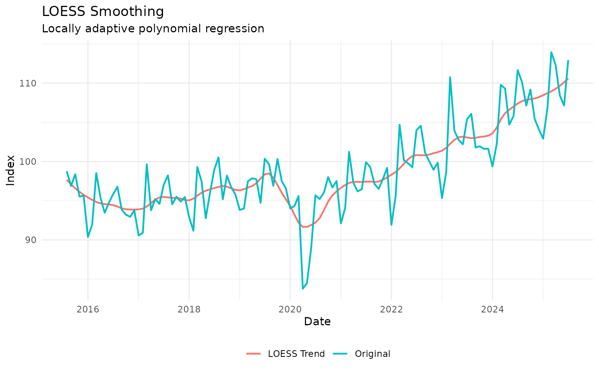
Adjusting the Span Parameter
The span parameter controls smoothness (0-1, where larger = smoother):
# Try different spans
spans <- c(0.1, 0.2, 0.4, 0.7)
ibcbr_spans <- ibcbr_recent
for (span in spans) {
temp <- ibcbr_recent |>
augment_trends(value_col = "ibcbr", methods = "loess", smoothing = span) |>
select(trend_loess)
names(temp) <- paste0("loess_", span)
ibcbr_spans <- bind_cols(ibcbr_spans, temp)
}
# Plot
ibcbr_spans |>
select(date, ibcbr, starts_with("loess_")) |>
pivot_longer(
cols = c(ibcbr, starts_with("loess_")),
names_to = "method",
values_to = "value"
) |>
mutate(
method = case_when(
method == "ibcbr" ~ "Original",
method == "loess_0.1" ~ "Span = 0.1 (flexible)",
method == "loess_0.2" ~ "Span = 0.2",
method == "loess_0.4" ~ "Span = 0.4",
method == "loess_0.7" ~ "Span = 0.7 (smooth)"
)
) |>
ggplot(aes(x = date, y = value, color = method)) +
geom_line(linewidth = 0.8) +
labs(
title = "LOESS with Different Span Parameters",
subtitle = "Larger span = smoother trend",
x = "Date",
y = "Index",
color = NULL
) +
theme_minimal() +
theme(legend.position = "bottom")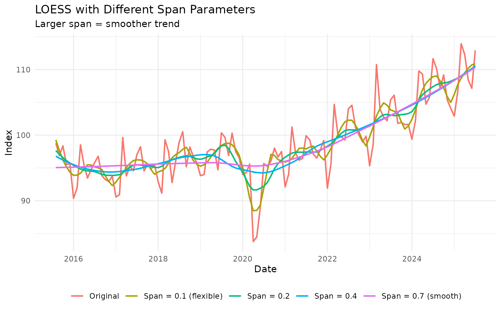
Recommended span values: - Flexible trend: 0.1 - 0.2 - Balanced: 0.2 - 0.4 - Smooth: 0.5 - 0.75
When to use LOESS: - Trend is nonlinear and complex - You want data-adaptive smoothing - Sample size is moderate (LOESS can be slow on very large datasets)
Spline Smoothing: Maximum Flexibility
Splines provide very flexible smoothing by fitting piecewise polynomials:
# Apply spline smoothing
vehicles_spline <- vehicles_recent |>
augment_trends(
value_col = "vehicles",
methods = c("spline", "loess", "hp")
)
# Plot
vehicles_spline |>
select(date, vehicles, starts_with("trend_")) |>
pivot_longer(
cols = c(vehicles, starts_with("trend_")),
names_to = "method",
values_to = "value"
) |>
mutate(
method = case_when(
method == "vehicles" ~ "Original",
method == "trend_spline" ~ "Spline",
method == "trend_loess" ~ "LOESS",
method == "trend_hp" ~ "HP Filter"
)
) |>
ggplot(aes(x = date, y = value, color = method)) +
geom_line(linewidth = 0.8) +
labs(
title = "Spline Smoothing vs Other Methods",
subtitle = "Splines are very flexible",
x = "Date",
y = "Production (thousands)",
color = "Method"
) +
theme_minimal() +
theme(legend.position = "bottom")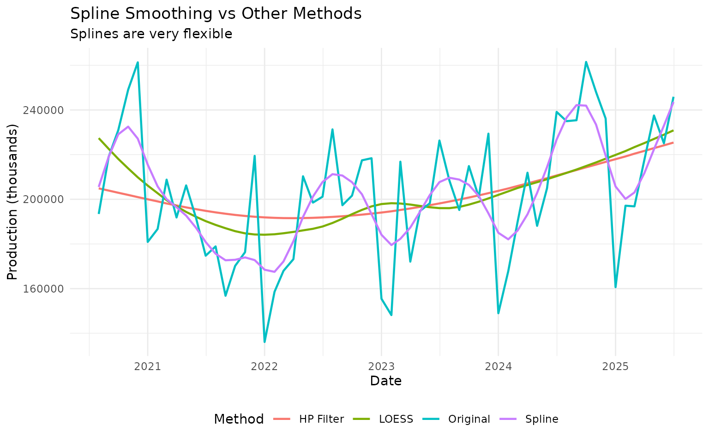
When to use splines: - You need maximum flexibility - Trend has complex, changing curvature - You don’t need to explain the method (it’s somewhat of a “black box”)
Combining Multiple Methods
Often the best approach is to compare several methods:
# Apply many methods to the same data
multi_method <- ibcbr_recent |>
augment_trends(
value_col = "ibcbr",
methods = c("hp", "stl", "kalman", "loess", "spline")
)
# Calculate median trend across methods
multi_method <- multi_method |>
rowwise() |>
mutate(
trend_median = median(c(trend_hp, trend_stl, trend_kalman,
trend_loess, trend_spline), na.rm = TRUE)
) |>
ungroup()
# Plot
multi_method |>
select(date, ibcbr, starts_with("trend_")) |>
pivot_longer(
cols = c(ibcbr, starts_with("trend_")),
names_to = "method",
values_to = "value"
) |>
filter(!is.na(value)) |>
mutate(
method = case_when(
method == "ibcbr" ~ "Original",
method == "trend_hp" ~ "HP",
method == "trend_stl" ~ "STL",
method == "trend_kalman" ~ "Kalman",
method == "trend_loess" ~ "LOESS",
method == "trend_spline" ~ "Spline",
method == "trend_median" ~ "Median of All"
),
is_median = method == "Median of All"
) |>
ggplot(aes(x = date, y = value, color = method, linewidth = is_median)) +
geom_line() +
scale_linewidth_manual(values = c(0.6, 1.5), guide = "none") +
labs(
title = "Ensemble of Trend Methods",
subtitle = "Median trend (thick line) combines multiple methods",
x = "Date",
y = "Index",
color = "Method"
) +
theme_minimal() +
theme(legend.position = "bottom")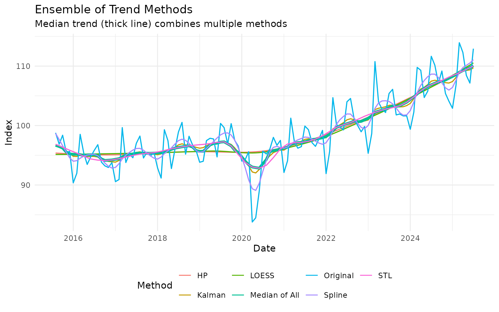
The median trend can be more robust than any single method.
Practical Application: End-of-Sample Problem
A common issue with trend extraction is behavior at the end of the sample (most recent data). Different methods handle this differently:
# Focus on the last year of data
recent_12m <- ibcbr |>
slice_tail(n = 24)
# Apply multiple methods
end_sample <- recent_12m |>
augment_trends(
value_col = "ibcbr",
methods = c("hp", "kalman", "loess", "ma"),
window = 6
)
# Highlight the last 6 observations
end_sample <- end_sample |>
mutate(recent = row_number() > 18)
# Plot with emphasis on recent period
end_sample |>
select(date, ibcbr, starts_with("trend_"), recent) |>
pivot_longer(
cols = c(ibcbr, starts_with("trend_")),
names_to = "method",
values_to = "value"
) |>
filter(!is.na(value)) |>
mutate(
method = case_when(
method == "ibcbr" ~ "Original",
method == "trend_hp" ~ "HP Filter",
method == "trend_kalman" ~ "Kalman",
method == "trend_loess" ~ "LOESS",
method == "trend_ma" ~ "Moving Average"
)
) |>
ggplot(aes(x = date, y = value, color = method)) +
geom_line(linewidth = 0.9) +
geom_vline(xintercept = end_sample$date[19], linetype = "dashed", alpha = 0.5) +
annotate("text", x = end_sample$date[19], y = max(end_sample$ibcbr, na.rm = TRUE),
label = "Last 6 months →", hjust = -0.1, vjust = 1) +
labs(
title = "End-of-Sample Behavior",
subtitle = "Different methods behave differently at the end of the series",
x = "Date",
y = "Index",
color = "Method"
) +
theme_minimal() +
theme(legend.position = "bottom")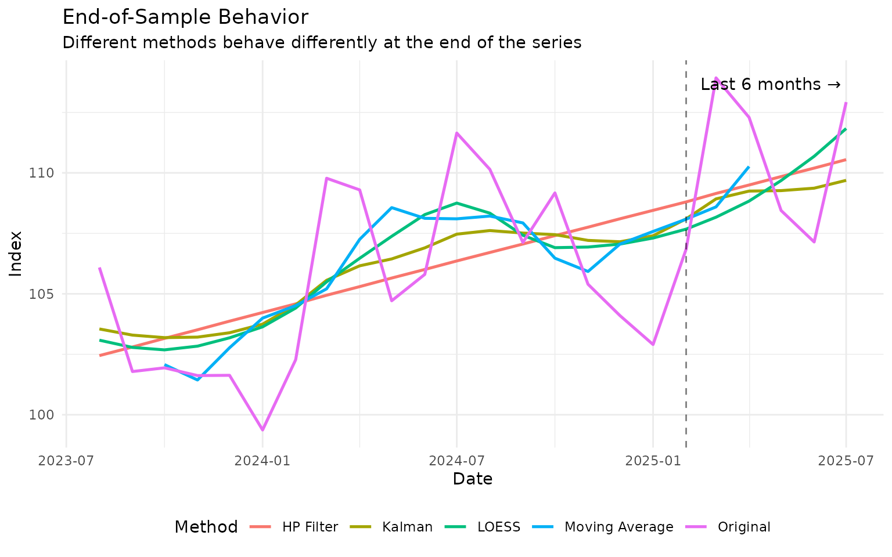
Key insights: - MA has NAs at the end (needs future data) - HP, Kalman, and LOESS all provide estimates at the end - Kalman filter often handles the end-of-sample best
Method Selection Guide
Decision Tree
-
Does your data have seasonality?
- Yes → Use STL
- No → Continue to step 2
-
Do you need to preserve peaks/valleys?
- Yes → Use Savitzky-Golay or LOESS
- No → Continue to step 3
-
Is this for business cycle analysis?
- Yes → Use HP filter (see economic-filters vignette)
- No → Continue to step 4
-
Do you need maximum flexibility?
- Yes → Use LOESS or Spline
- No → Continue to step 5
-
Do you want statistically optimal smoothing?
- Yes → Use Kalman filter
- No → Use Moving Average or HP filter
Method Summary Table
| Method | Seasonality | Peaks | Flexibility | Speed | Complexity |
|---|---|---|---|---|---|
| STL | ✓ | Medium | Medium | Fast | Low |
| Kalman | - | Medium | Medium | Fast | Medium |
| Savitzky-Golay | - | ✓ | High | Fast | Medium |
| LOESS | - | ✓ | High | Slow | Low |
| Spline | - | Medium | Very High | Fast | High |
Parameter Quick Reference
STL:
# Default works well for most seasonal data
data |> augment_trends(value_col = "value", methods = "stl")
# Adjust window for seasonal component
data |> augment_trends(
value_col = "value",
methods = "stl",
window = 13 # Must be odd
)Kalman:
# Light smoothing
data |> augment_trends(value_col = "value", methods = "kalman", smoothing = 0.5)
# Heavy smoothing
data |> augment_trends(value_col = "value", methods = "kalman", smoothing = 5.0)Savitzky-Golay:
# Standard setup
data |> augment_trends(
value_col = "value",
methods = "sg",
window = 9, # Must be odd
params = list(sg_poly_order = 3)
)LOESS:
# Flexible (less smooth)
data |> augment_trends(value_col = "value", methods = "loess", smoothing = 0.15)
# Balanced
data |> augment_trends(value_col = "value", methods = "loess", smoothing = 0.3)
# Smooth
data |> augment_trends(value_col = "value", methods = "loess", smoothing = 0.6)Spline:
# Default usually works well
data |> augment_trends(value_col = "value", methods = "spline")Common Pitfalls
Pitfall 1: Using STL on Non-Seasonal Data
Problem: STL fails or gives weird results Solution: Check if data actually has seasonality. Use ACF plot or visual inspection.
Pitfall 2: LOESS Too Flexible
Problem: Trend tracks data too closely, includes noise Solution: Increase span parameter (try 0.3-0.5 instead of 0.1-0.2)
Summary
Advanced methods provide powerful alternatives to standard approaches:
- STL: The go-to method for seasonal data
- Kalman: Statistically optimal, great for real-time filtering
- Savitzky-Golay: Preserves local features better than MA
- LOESS: Flexible, data-adaptive smoothing
- Spline: Maximum flexibility when you need it
Best practices: - Start simple (MA or HP) before trying advanced methods - Compare multiple methods to ensure robustness - Visualize results - don’t just trust the numbers - Consider the trade-off between smoothness and responsiveness
Further Reading
- For basic methods: See “Getting Started” vignette
- For moving averages: See “Moving Averages” vignette
- For business cycles: See “Economic Filters” vignette
- For STL details:
?stats::stl - For Kalman filtering:
?dlm::dlmSmooth
References
- Cleveland, R. B., Cleveland, W. S., McRae, J. E., & Terpenning, I. (1990). STL: A seasonal-trend decomposition. Journal of Official Statistics, 6(1), 3-73.
- Kalman, R. E. (1960). A new approach to linear filtering and prediction problems. Journal of Basic Engineering, 82(1), 35-45.
- Cleveland, W. S. (1979). Robust locally weighted regression and smoothing scatterplots. Journal of the American Statistical Association, 74(368), 829-836.
- Savitzky, A., & Golay, M. J. (1964). Smoothing and differentiation of data by simplified least squares procedures. Analytical Chemistry, 36(8), 1627-1639.